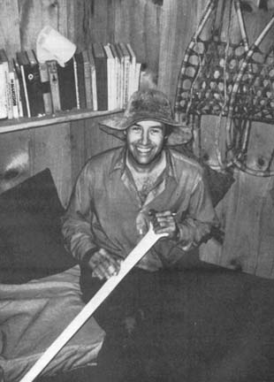
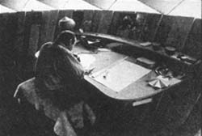
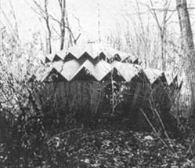
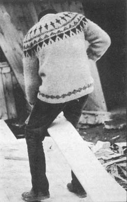

For most of his life, Bill Coperthwaite has been deeply involved in trying to temper the synthetic and dehumanized modern world with the folk wisdom of the ages. His search for the ancient "missing links" which he believes that today's society needs so badly has taken him traveling-by dog sled, jeep, jet, thumb and a faithful old Dodge pickup truck-to Mexico, Alaska, Finland, Canada, the backwaters of the U.S. and a thousand points in between.
In the early 1960's, Bill's restless quest led him to begin experimenting with a new (to modern man) kind ofliving space . . . a contemporary/ancient structure of the Mongols called a ger or yurt. Coperthwaite's article about his adaptation and successful utilization of the yurt led many of MOTHER's readers to build and even live in their own versions of Bill's $500 round house. Similar publicity in other magazines and countless newspapers has spread Coperthwaite's ideas to additional thousands and helped to create a steady demand for Bill's modern yurt plans.
It is characteristic of Coperthwaite, however, that he has not been content to merely settle back and develop the sale of his drawings and instructions into a thriving little mail-order business for his own personal profit. Not at all. Instead, Bill has plowed the (admittedly small for the undertaking) cash flow into a non-profit Yurt Foundation, designed to "collect folk wisdom from around the world and combine it with contributions from modern knowledge for the purpose of creating a lifestyle which will be simpler and in more intimate contact with the natural world while promoting intellectual and creative fulfillment".
Whew! That's some big bite for one man to try to chew. Then again, behind those laugh wrinkles around his eyes, Bill Coperthwaite is some big man. To capture a littleof his infectious spirit, MOTHER recently sent Bruce Williamson to visit Coperthwaite's Bucks Harbor, Maine headquarters to talk with Bill about his work, past experiences and dreams of the future.
PLOWBOY: As some of MOTHER's readers already know, Bill, the Yuri Foundation has pioneered the development and distribution of modern designs based on the traditional home of the Asian nomad. What's more, you've used the proceeds from the sale of yurt plans to organize a traveling museum that takes an exhibition of Eskimo artifacts to remote villages in Alaska. And beyond that, you're engaged in collecting and classifying a wide variety of folk knowledge. What's the basic idea behind all these projects?
COPERTHWAITE: Essentially, we're gathering information - especially traditional knowledge from many cultures - to help build a better society.
PLOWBOY: And what's your criterion for "better"?
COPERTHWAITE: A good society is one that enables every member to attain optimal growth. I hope we can evolve a culture in which everyone can be intensely involved in his own development: to do meaningful work, to use his capabilities, to feel self-confidence and self-esteem.
At the Yurt Foundation, we're trying to help our civilization move in that direction by encouraging the process I call social design: a process in which every person makes himself responsible for examining a variety of cultural elements and putting them together in a pattern, that fits his own needs. The contribution the foundation can make is raw materials . . . a reservoir of alternatives from which the individual can choose.
Our options for social design come not only from other cultures, of course, but from within our own. We've got to be able to look at our relationships with people, with animals, with objects, with books, with the movies . . . and reevaluate these relationships and put them together in different combinations.
Everyone's pattern will be different, of course. For myself, I'm excited about living close to the land because contact with the primary forces of nature is the best way I know to build a more stable life. However, the Yurt Foundation will be collecting knowledge that can make possible all kinds of lifestyles . . . not just those that appeal to me personally. Each person can use the raw data to fit his own needs.
PLOWBOY: You've had intensive exposure to other cultures, of course, with all the traveling you've done. Did the idea for the Yurt Foundation grow directly out of that experience?
COPERTHWAITE: Not really. The foundation developed from an earlier plan of mine for a school-centered community here at Bucks Harbor . . . that's what I bought the land for. At that time I thought early education was the key to social change . . . I wanted to provide a learning atmosphere that would help children grow into adults who were capable of sound economic, social, political and moral decisions.
Then I began to have doubts about the school project, and about the whole child-centered approach. It struck me that the one thing a child growing up today lacks most is the opportunity to listen to serious adult conversation. There are times when kids should be seen and not heard. Group life that revolves around a child - with everyone sitting and listening to him all the time - doesn't necessarily help him to grow.
Many adults (including teachers) are spending a lot of time as professional baby sitters, taking care of children instead of being concerned with our own growth. I believe, though, that a youngster who grows up among people who are excited about their own creativity and intellectual development has one of the best learning environments imaginable.
While I was mulling over these doubts, I suddenly realized that I had my project set up backward. I saw that what we really need are communities dedicated to encouraging the optimal growth of all people . . . children or adults. If you need a school in such a community, you build one . . . but the community remains primary and the school a spinoff, not the other way around.
At the same time, I'd been thinking about how to live simply, close to the realities of life . . . and about the need for knowledge that gives people like me the options from which to create our own patterns. Here was a chance for research and study that would be valuable, and fun too! I realized, moreover, that I had a vested interest in getting more people to work on the information that would help me design a better life, and also that my knowledge was valuable to others who wanted - as I did - to live more simply. Obviously, collecting data wasn't enough . . . we'd need to experiment with the information and publish the results for the use of others. So I got the idea of forming a community to work on these lines.
Then I had to figure out how such a community could raise its own food, construct its own buildings and provide itself with the cash it needed. Fortunately, at about that time my yurt research started catching people's interest and plans for these buildings began to sell. Since the yurt was a graphic symbol of the blending of old folk knowledge with modern experience - and since the design was bringing in some income to support more work of the same kind - it seemed good to call our community the Yurt Foundation.
PLOWBOY: How did you happen to start experimenting with yurts?
COPERTHWAITE: Well, to begin with, the idea of a round living space was very appealing to me and I wanted to design a version that would be simple to construct. The attraction, though, wasn't just the building itself - for example, I don't claim that a yurt is necessarily better than a log cabin, which can also be a very fine structure - but the fact that the yurt seemed to embody several ideas that are important to me.
First, because I wanted to transmit folk knowledge to help my contemporaries design a better society, I liked the idea of working with an ancient principle to design a modern structure using modern materials.
The yurt also has another very important value for me, as an example of the variety of directions we can take. We aren't limited to square corners in construction, and we shouldn't be restricted in our thinking, either . . . some people miss that symbolic point.
Then, too, I'm excited about the yurt because it provides a chance to work on something really new, with plenty of possibilities for experiment on the design. And in the long run, the value of that design is going to be that you and I and anyone who wants to can use it. That's another principle that the yurt expresses for me: The structure's simplicity lets the builder become personally involved in creating his own shelter.
You see, one of my goals in design - whether for a house or a pair of shoes - is to involve the machine less and the person's own capabilities more and more. That doesn't mean throwing out all machines or spending two weeks making a needle . . . such an approach can get ridiculous. But it does mean that whenever I can find a reasonably simple way to eliminate special material or tools in making a yurt, I'll do it . . . not in order to produce a quick result - like a molded plastic house - but in order to let the builder use his own personal skills.
PLOWBOY: What makes a yurt special, different from any other round building?
COPERTHWAITE: One distinctive feature of our version is the outward-sloping walls, and another is the fact that the roof of the yurt supports itself with the aid of a compression ring in the center, which also serves as a skylight. When we did a search in connection with our patent application on the yurt design, we found that - as far as the Patent Office is concerned - this kind of round structure is unique.
PLOWBOY: As long as the basic principles are followed, yurts can be built in any size, can't they?
COPERTHWAITE: Oh, yes, all sorts of variations are possible . Right now, for instance, we're working on a concentric yurt - one building within another - so we can put up a whole house without having to hook small units together. The concentric plan solves the problem of dividing circles into an attractive living space, and at the same time creates a more secure structure than one span. Actually, I built one of these double yurts five years ago but didn't want to publish the design until I'd simplified it to the point where the average person could put the building together. We're about ready to offer the concentric yurt plan now.
PLOWBOY: What else is happening in yurt research at present?
COPERTHWAITE: Well, I'm designing a log version, to give builders another option in simple materials . . . and we're making prefab yurts that cut the building time in half for people who want to put one up in a hurry. Also, I'm traveling around the country holding workshops with groups who want to build yurts and maybe experiment with the design while they're at it.
PLOWBOY: How long does it take to construct a yurt in a workshop?
COPERTHWAITE: If the materials are gathered together and enough hands are available, we can put up a small one in about three days . . . though I prefer to take five to allow time for seminars and discussions on both yurt-building and social design.
Ideally, of course, the group - students, family, community - will have been thinking about the project ahead of time, collecting the material, raising what money is needed. The more they're involved the better.
You see, I'm interested not in just building a yurt, but in using the project to facilitate communication within a group of people. The act of construction puts the builders in a new situation, makes them relate in new ways, breaks down barriers and creates a common goal.
What's more, the project gives me a bridge into the life of that group. If I walk in cold and try to start a discussion, I'll spend a great deal of time and energy just to break down resistance and create the willingness to share ideas. But if I come in to help those same people build a yurt, they're already so excited about that part of our encounter that meaningful communication is reached in much less time. A yurt workshop is simply a more efficient setting than the classic "seminar" for learning and exchanging thoughts.
PLOWBOY: I know that the Yurt Foundation has been raising funds by selling yurt plans and accepting individual contributions . . . but the kind of educational work you've been describing sounds as if it might qualify you for a grant of some kind. Have you applied to the large foundations for money?
COPERTHWAITE: Though many organizations today depend on begging for their funds, I think it would be sad if the Yurt Foundation did this also. To run an educational establishment on grants in this country doesn't prove a thing. People from India can look at it and say, "Sure, you can develop an organization concerned with social design because you've got lots of money." I'd like to show that work like ours can be done anywhere in the world where there are people interested in searching for a better way to live . . . that money matters less than attitudes.
Certainly money can help the work of the Yurt Foundation advance faster, and I'm willing to accept donations, but I'm concerned that we not become dependent on gifts. If we don't have any extra money we can still help fulfill the goals of the foundation by our daily work and experimentation with the knowledge we've already collected. If we have 10 extra dollars, then we can buy a couple of books . . . and if we have $10,000 extra, then we can send more people to work in the field.
PLOWBOY: What kind of fieldwork do you want to do?
COPERTHWAITE: I'd like to send researchers to gather knowledge directly from cultures throughout the world, as well as having the staff at home to coordinate that information once it's collected.
Ideally, I think, fieldwork would be done by teams. If a group of us were - let's say - in Japan, we could spread out to study and meet periodically to share our findings . . . or two or three of us could visit the same place, if need be. When such a team came home it would have enough variety of experience to put together a really useful publication on one culture.
I hope that eventually the Yurt Foundation will have the resources to carry out the whole process: to collect knowledge, think it through, experiment, rethink and finally publish.
PLOWBOY: Would all your team members be specialists?
COPERTHWAITE: No, no . . . the whole point is that anyone can contribute. A little kid on a trip abroad with his parents can notice different kinds of boats - for instance - and be curious enough to wonder why they're different, to take pictures, to talk to the boat-builders. Then when he mails in his results he can feel - and rightly - that his actions have helped preserve that knowledge.
PLOWBOY: Can you elaborate a little on how this kind of folk knowledge furthers the process of social design?
COPERTHWAITE: An awareness of traditional methods gives us more options from which to choose our own lifestyles . . . more ways to simplify life and become directly involved in meeting our own needs.
More specifically, the customs of small rural groups provide us with alternatives that we're not aware of because we're conditioned to think in terms of standardized methods. The use of locally available materials is a good example. The Finns, for instance, believe that lilac and the small mountain ash are two of the best woods in the world for making rake teeth. Because modern industry uses white oak for that purpose - to be sure of an adequate supply of material - we in this society don't realize that there are these other possibilities . . . when in reality we could make a rake out of that bush in the front yard that would be better than the commercial product, would cost nothing, and would involve us in its fashioning.
It's extremely important to gather this kind of information while it's still available. Since folk knowledge isn't considered essential by the mass culture, the old skills are dying out. The Canadian Eskimo who knows how to harpoon a seal through a hole in the ice or make a kayak in a certain way is disappearing . . . and in many cases we can't reconstruct what he knew.
Traditional knowledge is the product of thousands of generations of handing down from father to son, mother to daughter . . . and once that chain is broken we have to start all over again, which can be pretty much impossible. But if we can find and learn certain kinds of knowledge while they're still being transmitted, then we can become part of the chain and pass on what we know to other people throughout the world.
PLOWBOY: Besides learning from other civilizations yourself, you're involved in one project which is intended to reveal a way of life to the same group that originally evolved it. As many of the people who've bought yurt plans from your foundation know, that money helped finance a traveling museum of Eskimo culture which you took to remote villages in Alaska. When did you originate that idea?
COPERTHWAITE: I visited Alaska initially in 1967 because I wanted to see Eskimo craftsmanship at first hand and find out if the old ways are still practiced . . . and in the village Hooper Bay where I was staying, I did learn a good deal of traditional knowledge.
What depressed me, though, was the fact that many Eskimo kids were growing up without pride in their origin or respect for their own culture. They're victims of a kind of cultural oppression that's not planned or organized, but inevitably occurs when two ways of life collide and one dominates the other . . . as Western culture dominates the Eskimos and Indians in the North.
As always happens when I've lived with another people for a while, I wished there was some way I could repay the Eskimos for what they'd been teaching me . . . and my regret over their cultural oppression gave me an idea for doing so. It struck me that these people's art and artifacts had been stolen from them for centuries and put in museums. Because I had connections with museums and libraries and universities that the Eskimos lacked, I thought I might be able to get some of these objects back for them to see. The Eskimos I spoke with were interested, and so were Alaskan educators, anthropologists and friends.
As it turned out, I was able to create the project as I'd planned . . . and to use it as the basis for a doctoral program at Harvard as well. I'm hoping that the project report will be published . . . it's of special value because of Doug Porter's beautiful color pictures of Eskimo artifacts.
PLOWBOY: Have you ever run into the criticism that your work with the Eskimos was just "using them" for your own purposes?
COPERTHWAITE: Very seldom. True, I used the Eskimos by learning from them . . . but just as it's important for me to learn, it's important for them to know that they have something worth teaching. In return for learning from them, I gave respect.
PLOWBOY: You're saying that gaining from the Eskimos was a type of giving?
COPERTHWAITE: Yes. "Learning by doing" is an exciting concept . . . but I've been reversing the phrase lately and talking about "doing by learning" I've come to realize that - because I raised their self-esteem - I did more for the Eskimos by going to learn from them than I could have done in any other way.
PLOWBOY: During your stay with the Eskimos you worked with your hands a great deal, and I know you spend a lot of time on crafts both here and in other countries. Why do you emphasize handcrafts so strongly?
COPERTHWAITE: Crafts are important in this society because many people grow up lacking self-confidence, and the development of hand skills is a good way to promote a feeling of self-worth. Traditionally, though, we think of crafts as belonging to the specialists and their apprentices. An advantage of working with handcrafts of different cultures is that I'm stimulated to design techniques that enable more people to participate in these skills.
I've also found that - when I'm among people like the Eskimos to whom manual stills are common - crafts become an important means of communication. The fact that I've developed the ability to create with my hands not only establishes that I'm sincere in wanting to learn from people of another background, but drastically reduces the time it normally takes to overcome stereotypes and barriers . . . the language barrier, for one.
Here's an example: When I was in Finland I learned a kind of weaving that's done with a large darning needle. Then, later on, I went to Lapland and was taken to visit a home out on the tundra, where I was to have dinner . . . but nobody could talk to me because I knew no Lappish. In one corner - however - sat a tiny, wrinkled, toothless old woman . . . shyly looking away from me, afraid of this stranger.
Now, I usually carry things in my pocket for times like this . . . something to whittle, or a toy for the children. On this occasion I pulled out my strange "knitting" (which men aren't supposed to do, according to Lappish custom). Of course, I was taking a chance: Either I was going to lose status by doing women's work, or else the fact that I was relaxed about it and not afraid of doing something obviously out of place would help me gain status.
The little old lady was watching, and after a bit she came behind me and looked over my shoulder. The barrier had been broken because we had something in common now . . . working with yarn. I looked up and she smiled. I smiled in return and began doing the work more slowly, holding it where she could see more easily . . . and finally I handed it to her to let her try.
Another time, I sat down in a Swedish railroad station and pulled out some of my leatherwork. Very soon, some people gathered around . . . interested folks who looked at me, sized me up and saw that what I was doing was - to them - something new, interesting and out of the ordinary. Before long, a few sat down to chat and - eventually - invited me into their homes.
In short, handwork is an exciting way to relate to people, and we need to know more about techniques like this that facilitate positive contact with people from other cultures. The link isn't always easy to find, but I believe that it's always potentially there. For instance, sometimes you can make the connection by discovering at least one outstanding feature of a civilization - something that really amazes you - and keeping it in mind as you meet people. As far as I know, methods like this have never been singled out as a field of study.
PLOWBOY: Ways of jumping immediately into a foreign culture?
COPERTHWAITE: Yes . . . but "foreign" begins at home, remember. At Harvard - which was, to me, a foreign culture - the yurt I built on the campus became my bridge. We need keys to get inside another family, another community or another individual. We may think that communication is simple between individuals who speak the same language, or that people of the same culture will surely understand one another . . . and that's a dangerous assumption. I'm overly respectful when I walk into an Eskimo village, but I may be much less careful in my relationship with you just because I expect automatic understanding. In the same way, when I walk into your house I do well to assume that your culture is in some sense different from mine. That way, I'll behave with sensitivity and respect the rules of your home . . . but if I equate your way of living with my own, I may get irritated because you don't follow my customs.
PLOWBOY: Your view of crafts as a means of communication between cultures is much more profound than the usual idea . . . most people think of handwork as a hobby or pastime.
COPERTHWAITE: Hobbies are a construct of a society that needs to kill time . . . whereas life should be so exciting that you don't have time enough to get to all the things you want to do. People don't need hobbies, they need real, meaningful work.
Work that's useful and necessary is beautiful, yet I know few people who really enjoy it. When I was putting together the Eskimo project, one of the people at the University of Alaska criticized my plans by saying, "Coperthwaite, I think you're going to have a hell of a good time." That's not allowed in "serious" work. A common assumption of our society is that you're supposed to dislike what you do. "How can you have fun if you're learning something?"
My feeling is that if you don't like teaching that class, plowing that field or reading that book, stop being a prostitute, stop right now. Wait until you find the job that you want to do . . . even if you have to wait a long time.
In the words of Kahlil Gibran, "If you cannot work with love but only with distaste, it is better that you should leave your work and sit at the gate of the temple and take alms of those who work with joy. For if you bake bread with indifference, you bake a bitter bread that feeds but half man's hunger."
Some people feel that kids today just don't want to work. I say they haven't had the opportunity for training. I think true work is a skill that people can learn if they come to want to . . . but until they really enjoy the act - the way their bodies feel when they've finished some physical task - they will not see the beauty of labor.
The dominant culture gives a child work to do and only tells him that "work is good for you", instead of showing him the joy of being needed or the pleasure of accomplishment. It's silly to force a child to do something you could do more efficiently. But if that child can help you, really be useful, then it's another matter.
That's an advantage that comes naturally from living close to the land . . . there's plenty of useful work for a child - or an elderly person - to do. As a small boy I split kindling each day before my father came home. He could have chopped that wood faster than I . . . but he would have had to do it after a long day's work and usually after dark, so I felt useful. Or a little kid riding in a canoe may not be big enough to help out much by paddling, but the fact that he's up there in the bow holding it down with his weight is a contribution to the easy movement of the canoe through the water.
This kind of participation also helps a child begin to appreciate the beauty of a job well done - or of a good tool - for its own sake. So often these days, with kids rebelling against the dominant culture, they don't see the beauty of the utilitarian.
PLOWBOY: Do you think all utilitarian things can be beautiful?
COPERTHWAITE: I think that our society went through a long period of putting things down, saying that one should rise above the material level . . . and of course, it's possible to want objects in a miserly way, to need a collection of them as proof of one's worth. But there's another sense in which things are important because we respect and understand them . . . because we've come into an intimate relationship with them.
If a certain dish gets broken we feel badly . . . and if the dish doesn't matter to us at all then it's time to get some better dishes . . . ones we like.
We need to teach children to value the spirit within inanimate objects . . . the beauty that we see when we know who made a particular item or when we know the way it was formed or when we know how it works. We need to emphasize the interrelationship of all things, not only in a practical way, but out of respect for the skill that created an article. This attitude takes for granted a life intimately surrounded by things made by friends.
PLOWBOY: I suppose that child-raising on principles like this is another kind of work the Yurt Foundation might get into?
COPERTHWAITE: Well, this kind of "human information" is hard for us to deal with at our present stage. The material things - the graphics, the artifacts, the tools - are the easiest for us to grasp right now and deal with in getting the foundation moving.
Still, maybe some of the understanding that will help us deal with children - and other adults - is going to come from material things. For example, I believe that the need to hurt or kill is a manifestation of insecurity, of a need to put someone else down . . . and when we have the power to create with our hands, we become more secure and less prone to violence. It' you learn to shape a canoe paddle and gain confidence from that activity - without ever verbalizing the experience in any way - that confidence will show in your interactions with kids or with anyone else.
PLOWBOY: That's another good reason for encouraging the ordinary person to develop hand skills, I suppose. More generally, wouldn't the whole social principle you're working toward - the direct involvement of people in shaping their own lives - also tend to promote a non-violent culture?
COPERTHWAITE: Yes. Non-violence - like warfare - is rooted in small daily actions. How we live in the family or the community, how we operate our schools, how we treat children, what attitude we have toward objects . . . all this is directly connected with the violence in our society. In our families we call the hostility of children "normal sibling rivalry" . . . but other cultures handle it differently. If we could find out how to help a child grow to be a secure and sensitive person, we would eliminate warring.
PLOWBOY: You believe, then, that our best hope for a peaceful world is to create lifestyles that let people meet their psychological needs. How did you evolve your own idea of a satisfying life?
COPERTHWAITE: Well, back in college I began to think about what kind of work I would do, and to define what I wanted from my job. Although money and prestige normally affect our choice of vocation, I made up my mind that I didn't care to work for pay anymore . . . the money had to be a byproduct. I desired work that would keep me active physically, use my intellectual and creative abilities, keep me growing and contribute to building a better world. There are not many jobs in our society that meet these requirements . . . one of the few that I found was rural village development in Mexico.
Then, while I was in Mexico, my ideas about what was necessary in life really jelled. I thought about housing and food, and saw that it's really a crime for any of us to have more than we need while most of the world doesn't have enough. I also realized that there's nothing wrong with spending my time playing tennis or climbing mountains - I'm free to do what I want- - u nless my neighbor doesn't have enough to eat, in which case non-essential activity becomes criminal.
I'm not saying this to imply, "Look how much I'm sacrificing by not going off to climb or play tennis!" I like to play tennis . . . but I also like to help build a road in a Mexican village, and that's the more satisfying activity.
Or, if it was adventure I wanted, I could go down to South Africa and try to publish an honest newspaper. I could get my head busted that way just as easily as by climbing a mountain, enjoy just as much challenge and excitement . . . and when I lay in the hospital with my broken head I could at least recall that I got it doing something worthwhile.
PLOWBOY: You're saying that people need challenge and excitement in their lives in order not to stagnate?
COPERTHWAITE: Sure. In daily life here at Bucks Harbor, that need is met by a storm coming up suddenly, or a tree falling across the trail . . . or just by finding a nest of mice in the yurt and moving them out to the boat shed. That seems ridiculously small - moving a mouse family - but I maintain that the personal involvement in picking up the nest and scurrying around to catch the mother is an adventure (however trivial) that is much more valuable to personal growth than watching a vicarious event like STAR TREK on TV.
This eventfulness, incidentally, is another way in which a satisfying lifestyle reduces the impulse to violence. Our lives should include positive counterparts to the excitement, danger, teamwork and camaraderie that are normally associated with warfare. I think we can design societies that include this type of experience . . . but not at someone else's expense.
PLOWBOY: And that's the kind of problem that the Yurt Foundation is intended to work on, isn't it? What difference do you think your work in social design may make in the future?
COPERTHWAITE: It's hard to know . . . that sort of thing usually has to be taken on faith. You live the best life you can, but you don't know whether what you do will make the world a better place . . . in fact, it's presumptuous to think that your little effort will do so. Yet, at the same time, it is important to see that your little bit may be just the amount needed to turn the balance. You have no way of knowing how much your weight will tip the scales, but you can choose which side it goes on.
Bill Coperthwaite
The Yurt Foundation
Dickinsons Reach
Machiasport, ME 04656
And don't forget. . . if you write and just ask for information, it's only polite to enclose a stamped, self-addressed envelope and/or a dollar for Bill's trouble. Coperthwaite has dedicated everything he has to his life's work and his resources are always stretched thinner than-probably-you can possibly imagine.
|
 |
 |
 |
|
 |
|
|